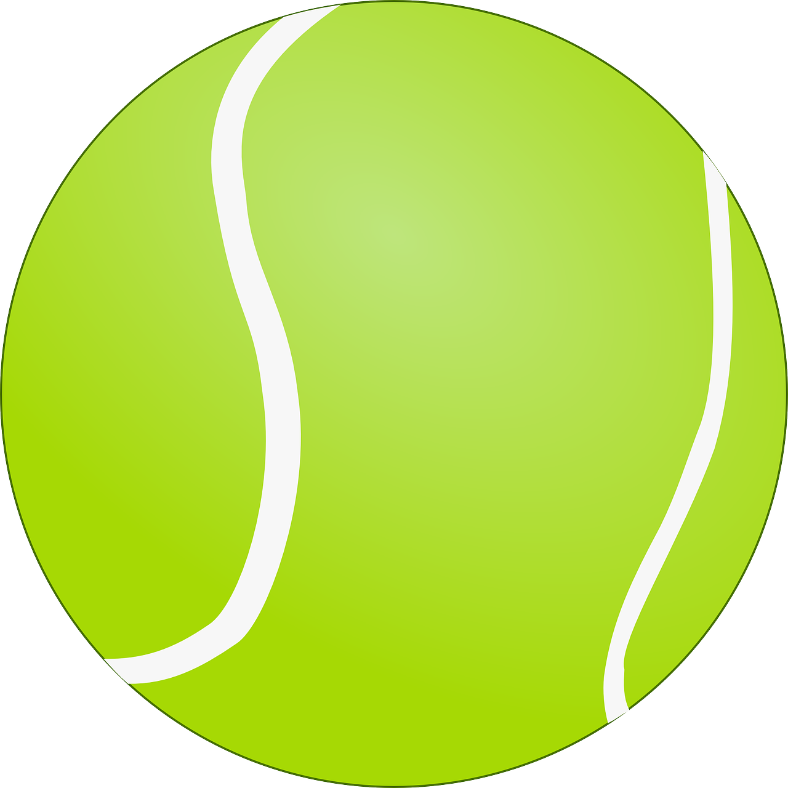
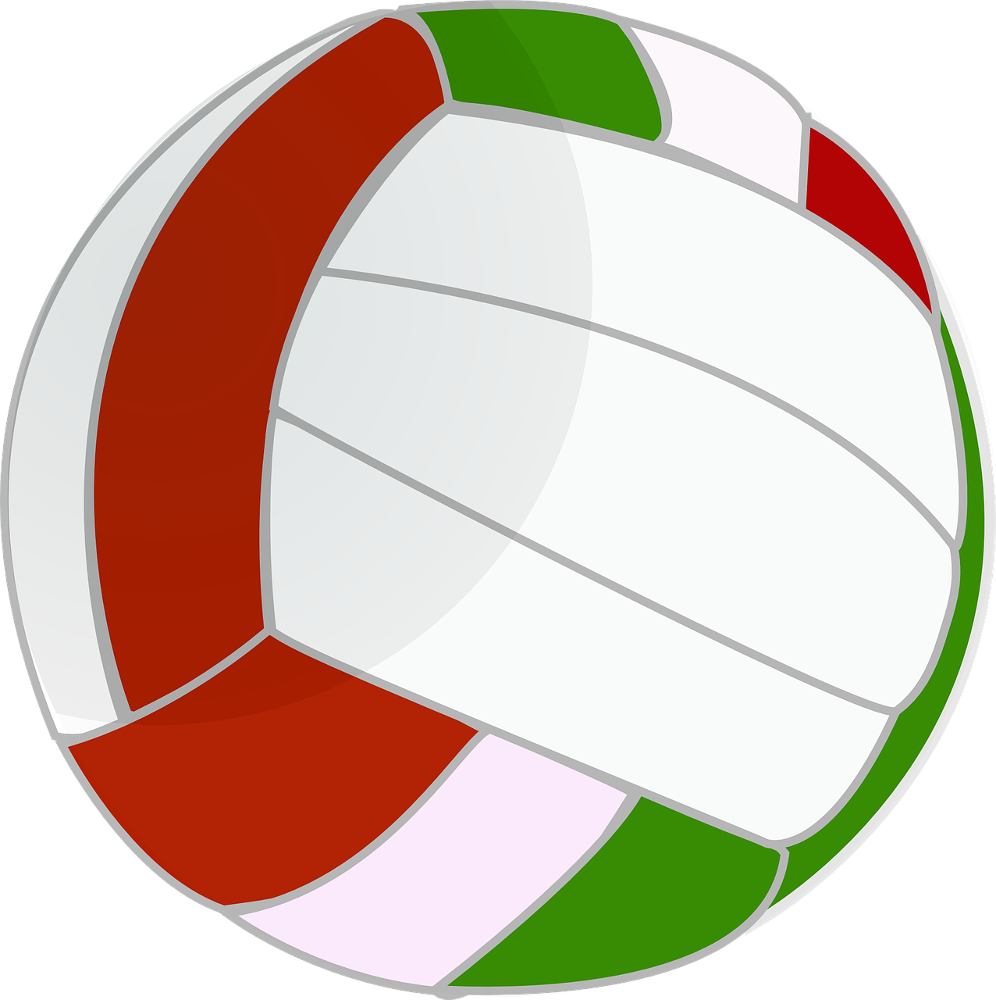
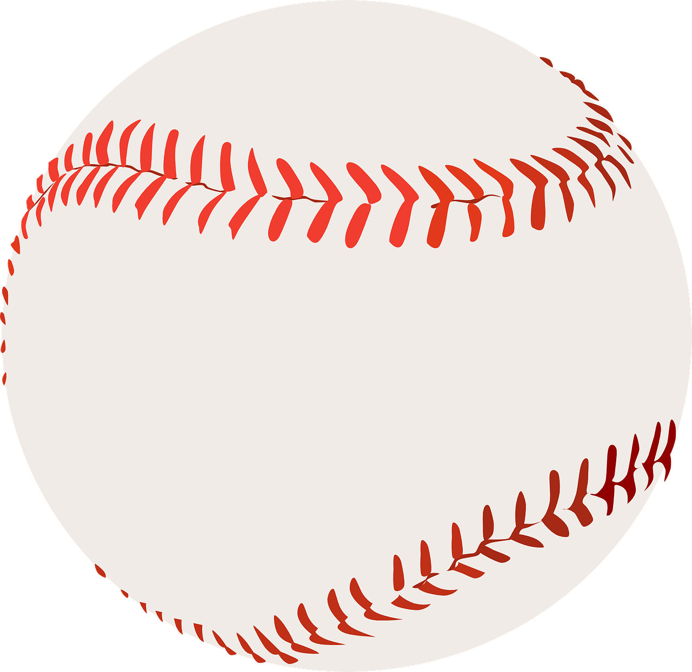

Fußball

Fußball-Regeln

- Im Fußball geht es darum, bis Ende des Spiels mehr Tore zu erzielen als der Gegner.
- In einem Fußball Spiel treten 2 Mannschaften mit je 11 Spielern gegeneinander an. Pro Spiel und Mannschaft können 5 Spieler ausgewechselt werden.
- Das Spiel dauert insgesamt 90 Minuten und wird auf 2 Halbzeiten mit jeweils 45 Minuten unterteilt. Die Halbzeitpause beträgt 15 Minuten.
- Durch Unterbrechungen des Spiels, durch Verletzungen, Auswechslungen und Regelverstöße kommt es am Ende des Spiels die Nachspielzeit.
- Das Tor zählt erst, wenn der Ball die Torlinie vollständig überquert hat. Wenn der Ball auf der Linie von dem Torwart gefangen wird, zählt dies nicht als Tor.
- Nur der Torwart darf den Ball mit den Händen spielen. Dies allerdings auch nur innerhalb des Strafraums.
Basketball-Regeln
- Für ein Spiel braucht es zwei Mannschaften mit je zehn bis zwölf Spielern. Auf dem Spielfeld befinden sich jeweils fünf Spieler. Die Spieler dürfen bei jeder Spielunterbrechung so oft wie gewünscht ausgewechselt werden.
- Jedes Team hat zudem eine bestimmte Anzahl von Auszeiten ("Timeouts"), die jeweils eine Minute lang sind. Deren Anzahl ist je nach Liga und Land unterschiedlich.
- Das Spiel besteht aus vier Vierteln, die jeweils zehn Minuten bzw. bei der NBA 12 Minuten lang sind. Am Ende gewinnt die Mannschaft, die nach Ablauf der Zeit die meisten Punkte hat. Bei einem Unentschieden gibt es eine Verlängerung, die fünf Minuten lang ist.
Tennis-Regeln

- Ein Tennisplatz ist in der Mitte durch ein Netz getrennt. Auf jeder Seite des Netzes steht ein Spieler.
- Ziel beim Tennis ist es, den Ball in die gegnerische Hälfte zu schlagen, möglichst so, dass der Gegner den Ball nicht oder nicht gezielt zurückschlagen kann.
- Ein Spieler schlägt auf. Dabei muss der Ball innerhalb einer bestimmten Markierung des gegnerischen Feldes aufkommen. Kommt der Gegner an den Ball, schlägt er ihn zurück ins Feld seines Gegenübers. Hierbei muss der Ball nur innerhalb der Spielbegrenzung aufkommen.
- Ein 6:4 gilt also als gewonnener Satz. Steht es jedoch 6:5, wird weitergespielt, bis es beispielsweise 7:5 steht.
- Einen Punkt erhält ein Spieler, wenn er ein Spiel gewinnt. Die Zählweise für Spiele ist jedoch ein wenig komplizierter.
Volleyball-Regeln

- Das Ziel bei Volleyball ist, dass der Ball auf dem Boden des gegnerischen Spielfeldes landet und zu verhindern, dass dieser auf dem eigenen Spielfeld landet.
- Im Volleyball stehen sich zwei Teams mit jeweils sechs Spielern gegenüber. Die Position dieser Spieler ist festgelegt und nach einem Aufschlagwechsel wechseln die Spieler des jeweiligen Teams ihre Positionen in einer festgelegten Reihenfolge.
- Es gibt beim Volleyball keine Zeitlimits. Um das Spiel für sich zu entscheiden, muss ein Team drei Sätze gewinnen. Insgesamt werden maximal fünf Sätze gespielt. Ein Satz ist gewonnen, wenn ein Team 25 Punkte erreicht und einen Vorsprung von mindestens zwei Punkten besitzt.
- Wenn der Ball auf dem gegnerischen Feld landet, erhalten Sie einen Punkt. Das Team, welches den letzten Spielzug gewonnen hat, schlägt auf.
- Es ist erlaubt, innerhalb eines Spielzuges den Ball dreimal zu passen. Im Volleyball ist es untersagt, dass ein Spieler zweimal hintereinander den Ball annimmt.
Baseball-Regeln

- Beim Baseball spielen zwei Teams mit je neun Spielern gegeneinander. Auf dem Spielfeld sind ein Abschlagefeld und drei Bases markiert.
- Eine Mannschaft beginnt als Angriffsmannschaft, die sogenannte Offense, und hat somit das Schlagrecht. Wer das Schlagrecht hat, hat auch die Möglichkeit, Punkte zu erzielen.
- Die gegnerische Mannschaft ist in diesem Fall die verteidigende, die sogenannte Defense.
- Die Defense stellt den Werfer, auch Pitcher genannt, der in der Mitte des Spielfelds steht. Er wirft den Baseball seinem Fänger - Catcher genannt - zu. Welche Geschwindigkeit so ein Baseball erreichen kann, verraten wir übrigens in einem weiteren Artikel.
- Vor dem Catcher steht der Schlagmann, Batter genannt - und versucht, den geworfenen Ball mit seinem Baseballschläger zu treffen und so ins Feld zu schlagen, dass kein Spieler der Defense ihn fangen kann.